Ron Spomer tells you how to roundup some "flying pesticide" to protect your summer crops.
During the midsummer months, most gardeners find that the struggle to protect their gardens from grasshoppers, aphids, and the like rapidly escalates into fullscale war!
That needn't be the case, however, because it's possible to keep your garden's insects under control ... without introducing damaging chemicals into the environment. The bug killer I'm talking about doesn't come in spray cans or plant tablets . . . but it does have a beautiful package. And-best of all-it's nontoxic, nondisruptive to the ec ological balance (in fact, it's very much a natural part of that balance), extremely effective . . . and free!
Birds-the ultimate natural pesticidehave been controlling the earth's insect population for millions of years (just by doin' what comes naturally!), but it's up to you to attract the "aerial bug bombs" to your land . . . and to encourage them to eat the parasites in your garden. You'll be amazed at just how much the feathered foragers do consume, too. A tiny swallow will devour 1,000 leafhoppers in 12 hours ... a pair of hungry yellowthroats make short work of thousands of plant lice . . . a Baltimore oriole can gobble up 17 hairy caterpillars per minute .. . a cuckoo will polish off 217 webworms at one sitting . . . and a house wren may feed 500 insects to its young in the course of an afternoon.
In order to attract birds to your homestead, you must first make some reliable source of water available. In a humid climate, frequent rains and morning dew may provide sufficient moisture for your feathered friends, or you might be able to rely on a stream or pond (if there is one on your land) . . . but it never does any harm to set up a bird bath. The receptacle can be as simple as a shallow pan of water placed on a stump, or as elaborate as the carved stoneware models sold at nurseries. The beaked bathers are especially attracted to moving water, however, so you might want to hang a leaky bucket (or a can with holes punched in its base) over the reservoir, and let it drip into the liquid below. (Make sure the "tub" is kept clean-and the water is changed often-so it won't spread diseases.)
A flying cleanup crew will be most easily drawn to your place if you can be counted on to provide a reliable source of food in the winter ... when insect treats are few and far between. The key is to plan ahead: If you want birds to de-bug your garden in the summer, remember to feed them in the colder months. Just keep your end of the bargain, and they'll return the favor later in the year. (As a bonus, the hungry flyers will provide you with an entertaining acrobatic show when they visit your winter "soup kitchen".)
And remember: Once you start providing them with cold-weather fare, don't neglect the snowbound birds ... because they'll come to depend on your for food and could actually starve if suddenly forced to do without their daily handout.
If you have a large yard-or an unused field-you might also consider planting some seed- and berry-producing vegetation that offers homegrown edibles to the winged hunters. Any tree, shrub, or vine that holds its fruit through the winter (cedar, holly, dogwood, or mountain ash, for example) can be a lifesaver for bluebirds, waxwings, and dozens of other species .. . while heavily seeded plants (such as sunflowers, millet, and corn) will attract sparrows, quail, and pheasants.
But even if you do have space to cultivate standing crops, it's a good idea to construct a feeding station as well. The drawings accompanying this article show several easily built feeder designs.
Many wintering birds (which don't migrate) hunt insect larvae and eggs. Nuthatches, woodpeckers, and chickadeesfor example-spend the cold months prying into bark and heaps of dead vegeta tion in search of grubs. But the hearty flyers can always use a little dietary supplement . . . so you might add variety to their menu by setting out a supply of sunflower seeds, suet (beef fat), and peanut butter.
Shelter is the final amenity that your avian guests will need. Birds require cover in which to hide, sleep, and raise their young . . . and t here are both natural and artificial ways to provide such "housing". It's often possible, for instance, to work with your land's existing vegetation-or plant new shrubs-and create "island habitats" on your property. You can form bushes into brushy tangles surrounded by open areas . . . plant hedges along fencelines . . . encircle your acreage (or just line the driveway) with small trees ... or put a rose thicket in the middle of the garden. Try to leave as much "edge" as possible between the separate plant communities, though . . . so each bird species can have its own private haven.
Be sure you supply a diversity of verdure for your feathered friends, too. Orioles need to nest in tall trees, meadowlarks prefer thick grass, and towhees and warblers go for dense brush. You might also want to combine fruiting plants with protective varieties such as hawthorn and cedar, since the "armed" growth will offer secure nesting sites.
And don't cut down all your dead trees, stumps, or limbs . . . they'll eventually be hollowed out by woodpeckers, and then used by dozens of "homesteaders" as snug nurseries. Furthermore, if you see swallows arriving on your land, be sure to dig a small watery muldhole for them . . . they'll need to use such "mortar" to construct their adobe nests under roof eaves and wooden bridges.
If you'd like to dramatically increase the size of the bird colony in your yard, you can often lure in entire feathered families with specially made nesting boxes. The small, comfortable structures will provide safe hatching spots, and several handcrafted "maternity wards"-in various shapes and sizes-can increase an area's avian population threefold!
It's possible to build simple boxes out of scrap wood (such as rough, on e-inch pine), but don't skimp by using thin lum ber, tin, or plastic . . . since birds often reject flimsy housing. Also, to prevent the birdhouses from becoming overheated, you should paint their outside walls alight, earthen color. Leave the insides of the shelters natural, however, and don't use any toxic preservatives anywhere on the nesting box. (Consult the accompanying table for the exact dimensions and specifications of nesting boxes for different species.)
You'll want to position the wooden hideaways all over your land: Hang some in mature trees . . . nail others to fenceposts in the pasture . . . hoist a fe w 20 feet in the air and place some only three feet off the ground. Be sure , too, that the entrance holes face away from prevailing winds . . so that the nestlings won't be exposed to chilling drafts and rain.
Usually, you won't have to "furnish" the interior of the houses at all ... although woodpeckers will appreciate a padding sawdust or wood chips in their shelters. Most other species prefer to bring in their own bedding, but you might want to place a few slabs of tough bark inside the shelters ... just to make your guests feel at home. And-like any good landlord you'll need to clean out the boxes after each nesting ... to eliminate any parasites that may have been left behind, and to make the "apartments" more attractive to their next tenants.
Once your winter visitors are well fed, watered, and housed, you can be pretty sure that they'll stick around through the summer to help limit the bug populations in your garden. And you can't beat the dependability-or the safety-of such natural pest control!
|
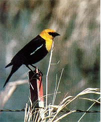 A sharp-eyed blackbird on sentry duty. |
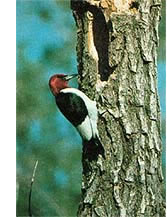 A woodpecker hollows out its new home. |
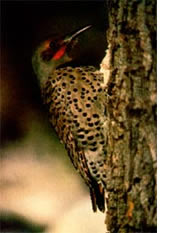 A flicker moves into its seasonal home. |
|
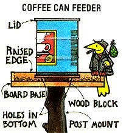 Natural nesting boxes provide good shelter. |
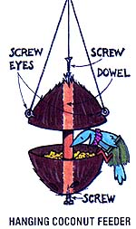 A horned lark feeds bugs to its young. |
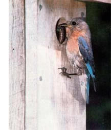 Neat and cozy: a natural avian nursery. |
|
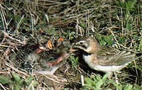 Suet bag feeders will attract hungry birds. A woodpecker hollows out its new home. |
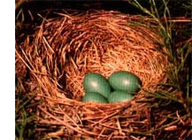 This male bluebird's nest is in alive evergreen, but these birds also like rough pine boxes. |
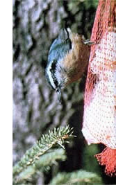 Mama chickadee serves up a wormy meal |
|
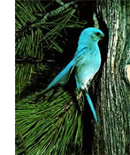 |
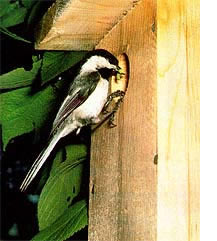 |
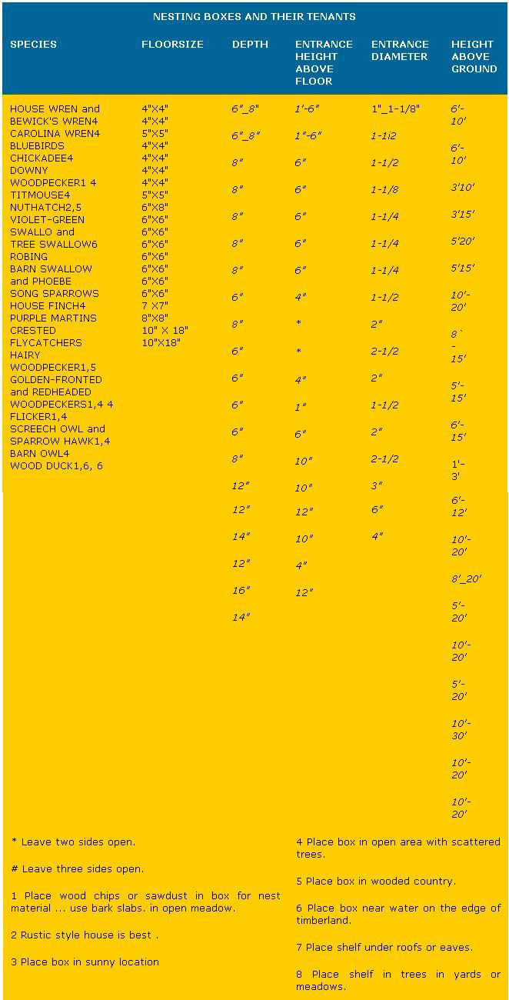 |